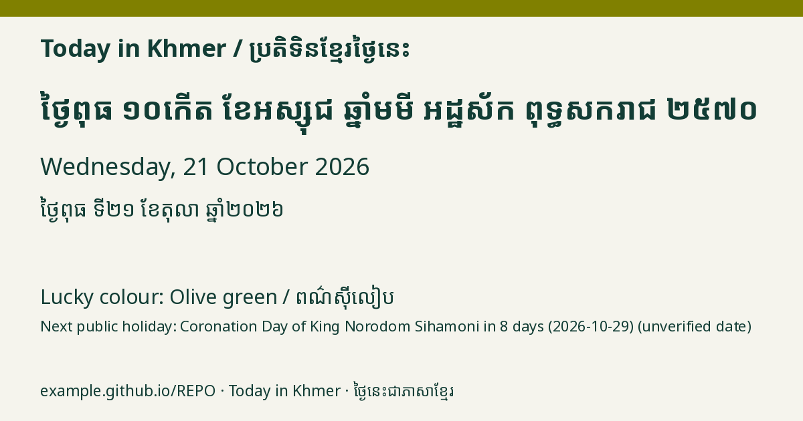

Wednesday, 21 October 2026
ថ្ងៃពុធ ទី២១ ខែតុលា ឆ្នាំ២០២៦
ថ្ងៃពុធ ១០កើត ខែអស្សុជ ឆ្នាំមមី អដ្ឋស័ក ពុទ្ធសករាជ ២៥៧០
10th waxing day of Assoch · Year of the Horse · B.E. 2570
Lucky colour: Olive green / ពណ៌ស៊ីលៀប
Next public holiday: Coronation Day of King Norodom Sihamoni in 8 days (2026-10-29) (unverified date)
